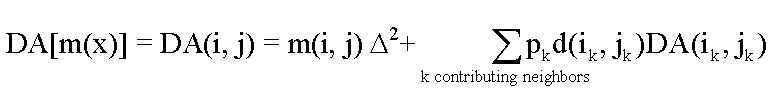
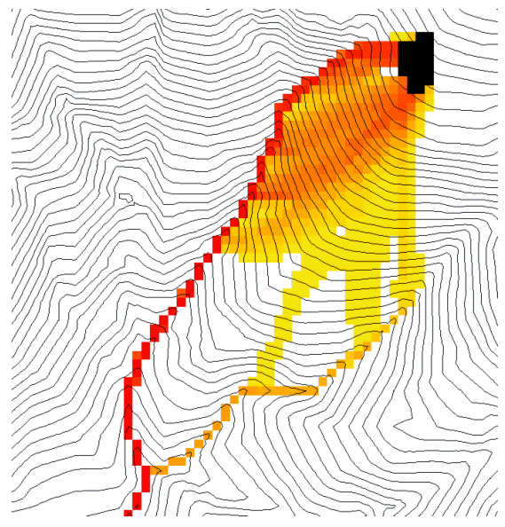

D-Infinity Decaying Accumulation
(c) 2010 by David G. Tarboton
The D-Infinity Decaying Accumulation tool creates
a grid of the accumulated quantity at each location in the domain where
the quantity accumulates with the D-infinity flow field, but is subject
to first order decay in moving from cell to cell. By default, the quantity
contribution of each grid cell is the cell length to give a per unit width
accumulation, but can optionally be expressed with a weight grid. The decay
multiplier grid gives the fractional (first order) reduction in quantity
in accumulating from grid cell x to the next downslope cell.
A decayed accumulation operator DA[.]
takes as input a mass loading field m(x) expressed at each grid
location as m(i, j) that is assumed to move with the flow field
but is subject to first order decay in moving from cell to cell. The output
is the accumulated mass at each location DA(x). The accumulation
of m at each grid cell can be numerically evaluated.

Here d(x) = d(i ,j) is a decay multiplier
giving the fractional (first order) reduction in mass in moving from grid
cell x to the next downslope cell. If travel (or residence) times
t(x) associated with flow between cells are available d(x)
may be evaluated as exp(-k t(x)) where k is a first order
decay parameter. The weight grid is used to represent the mass loading m(x).
If not specified this is taken as 1. If the outlets shapefile is used the
function is only evaluated on that part of the domain that contributes flow
to the locations given by the shapefile.

Useful for a tracking contaminant or compound
subject to decay or attenuation.
Parameters
- Number of Processes
Integer
- The number of stripes that the domain will be divided into and the
number of MPI parallel processes that will be spawned to evaluate each
of the stripes.
- D-Infinity Flow Direction Grid
Raster Grid
- A grid giving flow direction by the D-infinity method. Flow direction
is measured in radians, counter clockwise from east. This grid can be
created by the function "D-Infinity Flow Directions".
- Decay Multiplier Grid
Raster Grid
- A grid giving the factor by which flow leaving each grid cell is
multiplied before accumulation on downslope grid cells. This may be
used to simulate the movement of an attenuating substance.
- Weight Grid
Raster Grid (optional)
- A grid giving weights (loadings) to be used in the accumulation.
If this optional grid is not specified, weights are taken as the linear
grid cell size to give a per unit width accumulation.
- Outlets Shapefile
Point Shapefile (optional)
- This optional input is a point shapefile defining outlets of interest.
If this file is used, the tool will only evaluate ther area upslope of
these outlets.
- Check for edge contamination
Boolean
- This option determines whether the tool should check for edge
contamination. Edge contamination is defined as the possibility that
a value may be underestimated due to grid cells outside of the domain
not being considered when determining contributing area. Default
True.
Outputs
- Decayed Specific Catchment Area Grid
Raster Grid
- The D-Infinity Decaying Accumulation tool creates a grid of the
accumulated mass at each location in the domain where mass moves with
the D-infinity flow field, but is subject to first order decay in moving
from cell to cell.